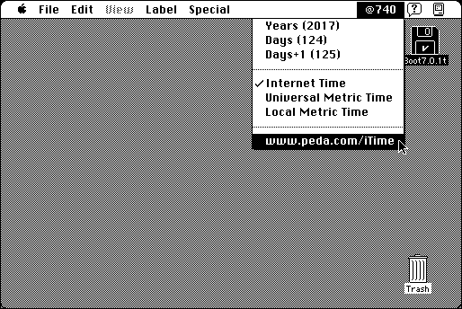

Download
iTime.zip (41K) iTime 1.03 repackaged into a zipped hfs disk image and checksum file. The disk image can be mounted with Mini vMac.
iTime.sit.hqx (53K) iTime 1.03 in the original format.
copyright: Pedagoguery
mod date: Mar 2, 2000
license: Freeware
official url :
Pedagoguery Software: iTime
A “system extension that places a metric / Internet time clock in your menu bar”, where “each day is divided into 1,000 beats rather than into hours, minutes, and seconds.” For “System 7 to MacOS 9.2”.

If you find these downloads useful, please consider helping the Gryphel Project, which hosts them.
Here are the md5 checksums for the downloads, signed with Gryphel Key 5:
--------- GRY SIGNED TEXT --------- d94a9d96cd3ae14e7681334bf112f915 iTime.zip 7142d6f5652f91fb34f368ee5af8f90d iTime.sit.hqx ------- BEGIN GRY SIGNATURE ------- Gry/4Xa8CFcUzxdN/DLeVmrzD1YE50579lAwvjvmh3HYGnN+YJs5PaIXEE7eYFXf f/Cz2eDB8a4Kye0ptCw3PfvKMSnzDQu5ZAza63cx1Og1avabEPfaWHJ53Z+3yyQc mZ3qf4z3HYvAYZmMU53uIlqI8IUM5if1zj/RxajUwGMwpfrgoSn9D+nSbmFwuIbV -------- END GRY SIGNATURE --------